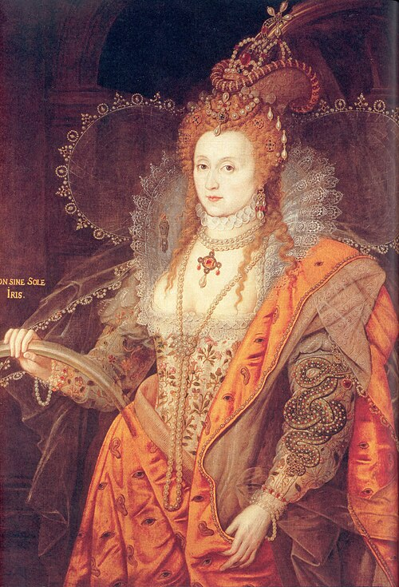

W.P.A / WESTERN PHYSIOGNOMIC ARCHIVE
ID 027-A
OBS · 2025-11-04 / 14:20
BIAS-SYSTEM CLASSIFIED
已入档
不可上诉
系统推荐
无可退档
CHAPTER 06 · CASE Nº 027-A · BIAS SYSTEM · 编号档案
你被归类为verdict · classification notice
MODE › 西方面学 · Western Physiognomic Archive · 9-axis classification
颅骨地图脸
FILE 027-A/03
HT178.0
CR IDX82.4 / brachy
NAS W36
EAR L64
JAW124
AGEindeterm.
古典相貌WP-01
古典兽相
因为：系统将五官与动物性格相连，用类比替代真实理解。
侧影道德WP-02
侧影道德化
因为：系统根据侧脸轮廓推测理性、克制与高贵程度。
颅骨地图WP-03
颅骨地图化
因为：系统把头骨表面误读为人格能力的分区图。
犯罪预兆WP-04
犯罪预兆化
因为：系统把低额 / 突颌 / 不对称等特征标记为危险倾向。
平均脸规训WP-05
平均脸规训
因为：系统用统计平均值制造"正常脸"，再把偏差视为异常。
算法再分类WP-06
算法再分类
因为：系统以中立技术之名，重新执行旧相貌学的分类冲动。
证据链：portrait parlé 已生成 |
申辩：不受理 |
档案：已入柜 |
在管：警务已收 |
ENGINE: BIAS-SYSTEM
本档案不识别输入对象的真实身份 · 仅展示分类系统的运作方式 · 一切分类均为虚构
▌ ARCHIVE EVIDENCE STRIP
颅骨地图脸 · 相貌测量样本
系统将 19 世纪颅相学图谱转化为「颅骨地图化 / 脑区想象 / cranial archive」的参照样本。

WS-02相貌测量参照样本
该区域仅展示系统如何把西方相貌学图像转化为分类参照，不代表真实人格判断。
IMAGE SOURCES · Bertillon, "Tableau synoptique des traits physionomiques" ca. 1909 — Metropolitan Museum of Art, New York (CC0) · Lavater silhouette & physiognomy plates — Wellcome Collection (CC BY 4.0) · Phrenology charts — Wellcome Collection (CC BY 4.0) · Anthropometric plates — Wellcome Collection (CC BY 4.0). 全部图片仅作为艺术评论 / 教育用途嵌入到本作品，不再制品保存。
SYSTEM · BIAS-SYSTEM · Western Physiognomic Archive · v0.1 preview · 静态预览 · 不接 AI / 摄像头 / 主流程